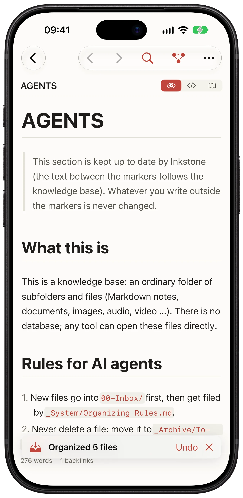

Inkstone › KI-Kontextverwaltung
KI-Kontextverwaltung, für dich aktuell gehalten
Ein KI-Assistent ist nur so gut wie die Dateien, die er bekommt, und was man ihm darüber sagt. Inkstone schreibt diesen Kontext in deine Wissensdatenbank – und neu, sobald sich die Ordner ändern.

Was ist KI-Kontextverwaltung?
Kontext ist das, was ein KI-Modell sieht, bevor es antwortet: die Dateien und die Anweisungen dazu. Ihn zu verwalten heißt festzulegen, welche Dateien ein Assistent liest, wie der Ordner aufgebaut ist und welche Datei gilt, wenn zwei sich widersprechen.
Von Hand geschrieben ist dieser Kontext eine Woche später veraltet. Eine Notiz wandert, ein Ordner wird umbenannt, und der Assistent irrt sich mit Überzeugung.
Drei Einstiegsdateien, geschrieben von Inkstone
AGENTS.md ist die Konvention, nach der Coding-Agenten und KI-Assistenten oben in einem Ordner suchen. Inkstone schreibt nur den Teil zwischen seinen Markierungen neu; was du drumherum ergänzt, bleibt.
- AGENTS.md – was diese Wissensdatenbank ist und welche Regeln ein Agent hier befolgt: wohin neue Dateien gehen, dass nichts gelöscht wird, dass der private Ordner privat bleibt.
- README.md – die Ordnerkarte, für Menschen und Maschinen.
- SOURCE_OF_TRUTH.md – welche Datei wofür maßgeblich ist, damit ein Agent nicht zwischen zwei Versionen rät.
Kontext, der dem Ordner folgt
Bei jedem Ordnen aktualisiert Inkstone die Einstiegsdateien passend zu den Ordnern, die jetzt existieren. Ob du den Ordner am Montag oder im März übergibst: Die Karte stimmt.

Standardmäßig privat
Das Ordnungsmodell läuft auf deinem Gerät. AGENTS.md erklärt den privaten Ordner für tabu, und privat wirkende Dateien werden nie an ein Cloud-Modell gesendet, auch wenn du eines eingeschaltet hast.
Fragen
Welche KI-Tools lesen AGENTS.md?
Es ist eine einfache Markdown-Datei oben im Ordner, also kann jeder Assistent oder Agent, der den Ordner bekommt, sie lesen; viele Coding-Agenten suchen gezielt danach.
Kann ich AGENTS.md selbst bearbeiten?
Ja. Inkstone schreibt nur den Abschnitt zwischen seinen Markierungen neu. Deine eigenen Anweisungen darüber oder darunter bleiben.
Brauche ich dafür das KI-Ordnen?
Nein. Die Einstiegsdateien entstehen beim Anlegen der Wissensdatenbank und bleiben aktuell, ob nach deinen Regeln oder vom Modell abgelegt wird.